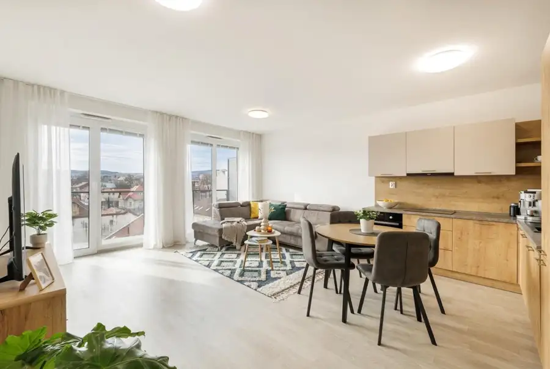
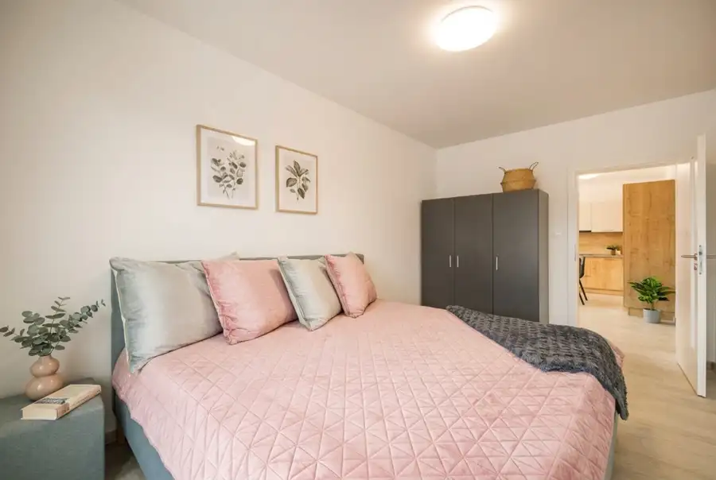
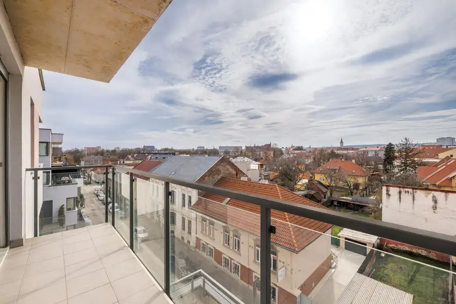
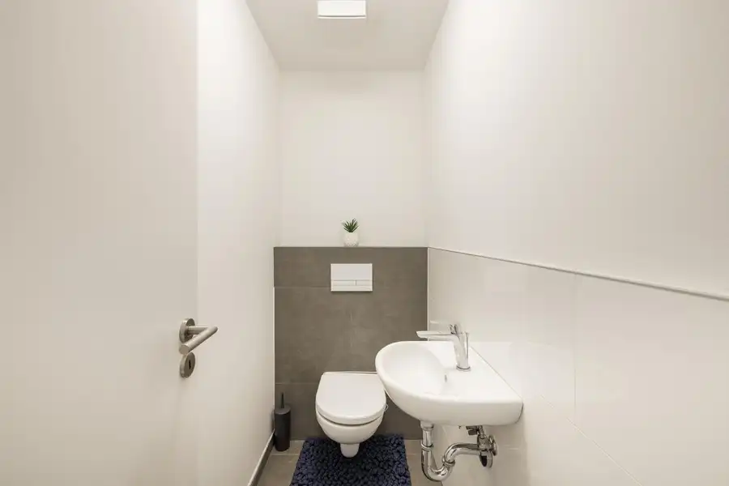

Na predaj 3-izbový byt v novostavbe Thurzovka - Košice,Staré Mesto
Staré Mesto, Košice




- Dispozícia3-izbový
- Plocha78 m²
- Poschodie5. z 5
- StavNovostavba
- VlastníctvoOsobné
- Energetická triedaA
O nehnuteľnosti
Century 21 Vám exkluzívne ponúka na predaj priestranný a kompletne zariadený 3-izbový byt v obľúbenej novostavbe Thurzovka na Thurzovej ulici v mestskej časti Košice – Staré Mesto.Ak hľadáte moderné a komfortné bývanie v atraktívnej lokalite s výbornou dostupnosťou do centra mesta, táto nehnuteľnosť môže byť ideálnou voľbou. Byt ponúka premyslenú dispozíciu, príjemnú orientáciu, dostatok priestoru pre pohodlné bývanie a zároveň nízke náklady. Veľkou výhodou je aj poloha v pešej dostupnosti historického centra Košíc a kompletná občianska vybavenosť v bezprostrednom okolí.Byt sa nachádza na 4. poschodí bytového domu a ponúka celkovú výmeru 78 m². K nehnuteľnosti patria dva priestranné balkóny, pričom na jeden je vstup zo spálne a na druhý priamo z obývacej izby. Balkóny tak poskytujú príjemný vonkajší priestor na rannú kávu, oddych alebo posedenie s rodinou a priateľmi. Praktickým benefitom je aj vlastná pivnica umiestnená priamo oproti bytu na spoločnej chodbe, vďaka čomu máte úložný priestor vždy pohodlne poruke.Byt je orientovaný na juhozápad, čo zabezpečuje dostatok prirodzeného svetla počas väčšiny dňa a vytvára príjemnú atmosféru v interiéri. Predáva sa kompletne zariadený vrátane nábytku a elektrospotrebičov, takže je pripravený na okamžité nasťahovanie bez potreby ďalších investícií.Dominantou bytu je priestranná obývacia izba prirodzene prepojená s kuchyňou a jedálenskou časťou, ktorá vytvára vzdušný spoločenský priestor. Kuchyňa je kompletne vybavená spotrebičmi vrátane umývačky riadu, elektrickej varnej dosky, elektrickej rúry, digestora, chladničky s mrazničkou a mikrovlnnej rúry. Súčasťou vybavenia bytu je aj práčka.Dispozične byt pozostáva zo vstupnej chodby, priestrannej obývacej izby spojenej s kuchyňou a jedálenskou časťou, dvoch samostatných spální, kúpeľne s vaňou a samostatného WC. Nechýbajú dva balkóny a vlastná pivnica situovaná priamo oproti bytu na spoločnej chodbe.Novostavba Thurzovka patrí medzi vyhľadávané rezidenčné projekty v širšom centre Košíc. Lokalita ponúka ideálnu kombináciu mestského života a možností na oddych. Priamo v blízkosti bytového domu sa nachádza mestský park, ktorý je vhodný na prechádzky, relax či športové aktivity. V pešej dostupnosti je mestská plaváreň, letné kúpalisko, fitness centrum, pošta, zastávky MHD a množstvo reštaurácií a kaviarní. Hlavná ulica s kompletnou občianskou vybavenosťou je vzdialená len pár minút, rovnako ako obchodné centrum Aupark.Vďaka svojej výmere, praktickej dispozícii, dvom balkónom, juhozápadnej orientácii, kompletnému zariadeniu a výbornej polohe predstavuje byt komfortné bývanie pre rodinu, pár alebo každého, kto hľadá priestrannú nehnuteľnosť v blízkosti centra Košíc.Cena nehnuteľnosti je 329 900 € s DPH.Ak hľadáte moderný a priestranný byt v kvalitnej novostavbe, ktorý ponúka vysoký komfort bývania, dostatok priestoru a zároveň výbornú dostupnosť do centra mesta, neváhajte nás kontaktovať a dohodnúť si termín obhliadky na telefónnom čísle 0949 126 205 alebo emailom na lucia.mackova@century21.sk
Parametre
- Cena vrátane energií
- Nie
- Druh
- 3 izbový byt
- Dátum zverejnenia
- 22. 09. 2026
- Energetický certifikát budovy
- A
- Plocha balkónu v m2
- 12 m²
- Podlažie
- 5
- Počet nadzemných podlaží
- 5
- Rok kolaudácie
- 2021
- Stav nehnuteľnosti
- Novostavba
- Telekomunikácie
- Optická sieť
- Typ
- Predaj
- Vlastníctvo
- Osobné
- Vybavenie
- Garáž
- Vykurovanie
- Ústredné
- Úžitková plocha
- 78 m²